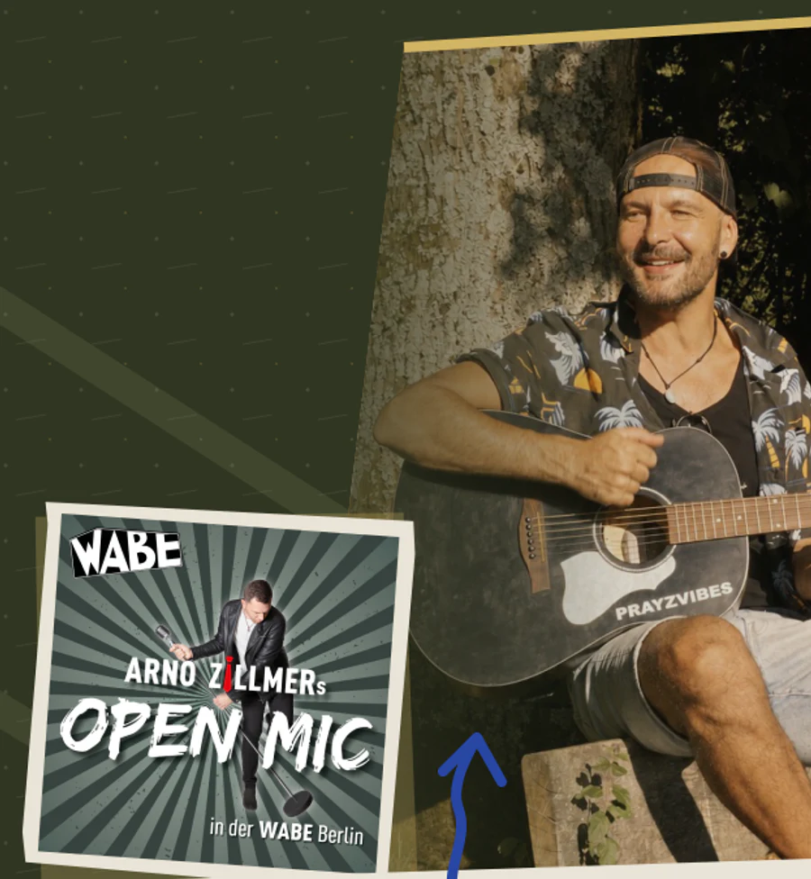
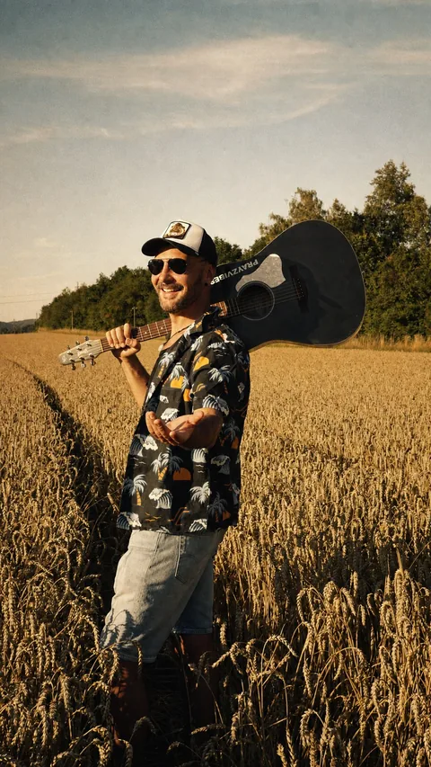

Eine Stimme. Eine schwarze Gitarre. Rhythmus unter den Füßen.
PRAYZVIBES
Indie-Folk aus Bayern, auf der Straße gewachsen—auf Englisch, Französisch und Deutsch.
Ein Ort zum Ankommen
Komm auf deine Weise herein.
Neu hier? Beginne mit 01. Alle anderen Türen bleiben offen.
YouTube wird erst geladen, wenn du auf Play drückst.
Hier beginnen · Mountain Day
Manchmal kommt der nächste Schritt nicht durch mehr Druck.
Für Momente, in denen du nicht mehr Druck brauchst, sondern etwas Luft und einen anderen Blick. Dort begann Mountain Day.
Aktuelle Veröffentlichung · vier Songs
TRANSIENCE
Vier Songs, geschrieben zwischen Weite, Erinnerung, einem Sprung nach vorn und dem Moment des Loslassens.
- 01Mountain Day
- 02High Week
- 03Big Jump
- 04Transcendance

Berlin · Mi, 4. November 2026 · 20:00 Uhr
Berlin, hörst du mich?
Zehn Minuten. Zwei eigene Songs. Eine schwarze Gitarre.
PRAYZVIBES ist einer der Gast-Acts bei Arno Zillmers Open Mic in der WABE im Interkulturellen Haus Pankow.
Komm vorbei. Bring jemanden mit.
5 EUR an der Abendkasse · kein Vorverkauf · Reservierung empfohlen
Die Straße verklingt. Die Songs gehen weiter.
Live-Set anfragenTransience anhören Nenn mir Datum, Ort und was für ein Raum es ist. Der Rest beginnt hier.Salzburg · live auf der Straße
Hol die Songs zu dir.
Diese Songs haben auf der Straße gelernt zu leben. Niemand musste zuhören. Wenn jemand blieb, war es echt.
Bayerische Hügel · Keller · Straße · Dachbalken
Ich singe nicht, um vor dem Leben zu fliehen. Ich singe, um ganz hineinzugehen.
Bei einem Picknick an einem Hang lief Redemption Song—und für einen Moment war da ein tiefer Frieden, der mir geblieben ist. Die ersten Songs kamen später im Keller, nur mit Stimme und Gitarre. Auf der Straße lernten sie zu atmen. Heute nehme ich sie in einem Studio unterm Dach auf.
Autodidakt, unabhängig und in der Fränkischen Schweiz verwurzelt. Die Songs bewegen sich durch Englisch, Französisch und Deutsch; Stimme, schwarze Akustikgitarre und Rhythmus bleiben im Zentrum.
PRAYZ kennenlernen
Living Charge · Street Studies
Auch ein leises Zeichen kann durchdringen.
Ziegel, Beton, Papier und eine blaue Linie werden zu vier echten Wegen: in die Musik, zu einer Live-Begegnung, zur unabhängigen Unterstützung oder zu Dingen, die mitreisen.
Living Charge · offizielle Kollektion
Vier Zeichen für unterwegs.
Handgezeichnete Zeichen für klarer sehen, tiefer hören, Resonanz schaffen und bewusst leben—auf Dingen, die bleiben und mitgehen.
Kollektion ansehenOffizieller PRAYZVIBES Shop · Sicherer Checkout über Fourthwall · Preise in EUR · Details zu Versand und Rückgabe im Shop
Unabhängige Musik · direkt unterstützt
Damit die Songs unabhängig bleiben.
Zuhören, teilen, zu einem Konzert kommen oder Musik kaufen hilft schon. Wenn du den nächsten Song direkt unterstützen möchtest: Hier findest du alle Möglichkeiten. Freiwillig und ohne Druck.
Zuhören · teilen · vorbeikommen · beitragen
Zuhören und Teilen zählen genauso
Presse · Veranstalter · Partner
Presse & Booking.
Biografie, Release-Informationen, Live-Format, ausgewählte Presse und direkte Kontakte.